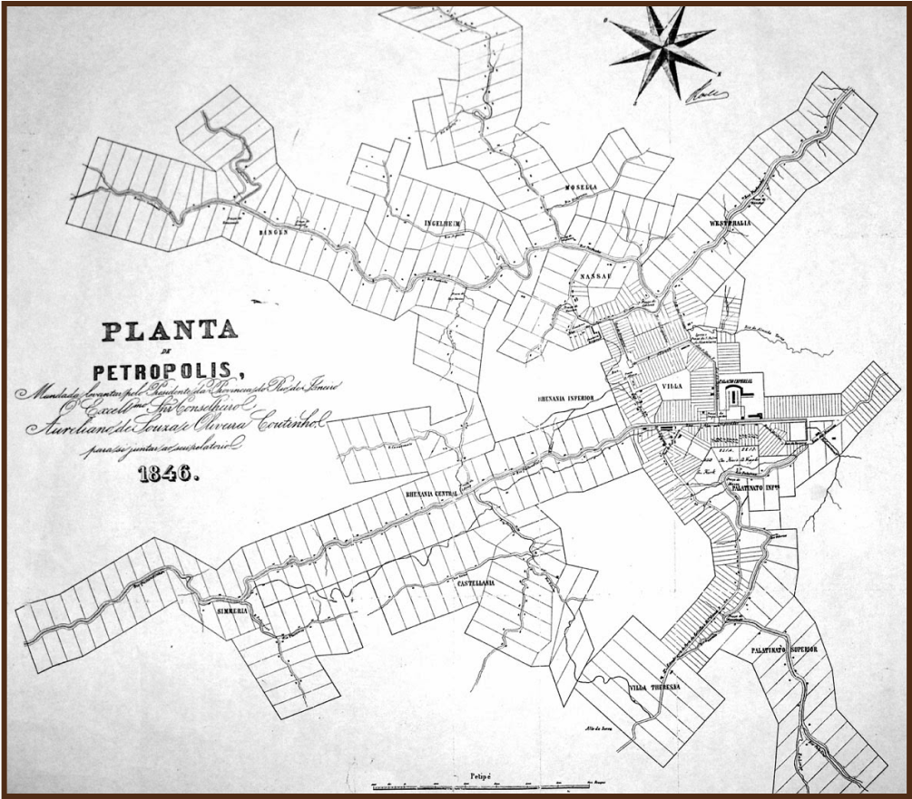
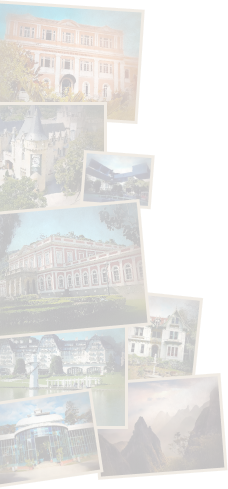
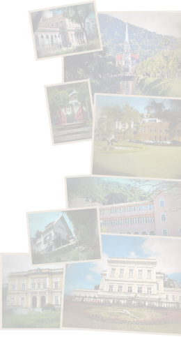

Petrópolis foi estabelecida a partir de um decreto imperial datado de 1843. Arrendadas as terras ao major Júlio Frederico Koeler, a cidade teve um planejamento urbanístico tão bem detalhado que é considerada por uma parcela significativa de historiadores e estudiosos como a primeira cidade planejada do Brasil. Do projeto constam, por exemplo, detalhes sobre as áreas mínimas dos terrenos e a proteção das matas das encostas.

Publicidade


O Portal de Melhorias Urbanas de Petrópolis foi criado com o intuito de colaborar para o desenvolvimento urbanístico de nossa cidade, reunindo, em um só lugar, projetos de profissionais do setor que atendam nossas constantes demandas por mobilidade e sustentabilidade, preservando e exaltando nossa riqueza histórica e natural.